class: center, middle # There are <span class="highlight">10 kinds</span> of people in this world. # <span class="highlight">Those that understand</span> binary and <span class="highlight">those that don’t</span>. --- class: center, middle # How To Make A Successful <span class="highlight">Story from data</span> Teemo Tebest, <span class="highlight">@teelmo</span> --- class: left, middle # Teemo Tebest * Data <span class="highlight">Journalist</span> * Background in web dev and information visualisation * 10+ years of experience in data journalism * At the <span class="highlight">Yle/Finland</span> and at the <span class="highlight">EBU/Geneva</span> ```javascript require('JS, HTML5, PHP, Python, full-stack, MongoDB, GIS, network analysis'); ``` * Twitter: <a href="http://twitter.com/teelmo"><span class="highlight">@teelmo</span></a> * Homepage: <a href="http://teelmo.info"><span class="highlight">teelmo.info</span></a> --- class: left, middle # <span class="highlight">Agenda</span> for today * Examples * Exercises * More examples * Discussions * Hand-on with Datawrapper ```javascript if (Motivation === true) { if (Implemantion === true) { return Outcome } } ``` --- class: left, middle # <span class="highlight">The point</span> and my angle I am a journalist, not an economist or statistician. My focus is online, the web. My goal is to work with you to make your work more visible. <span class="highlight">So I am here to help you :)</span> --- class: left, middle # DIKW pyramid 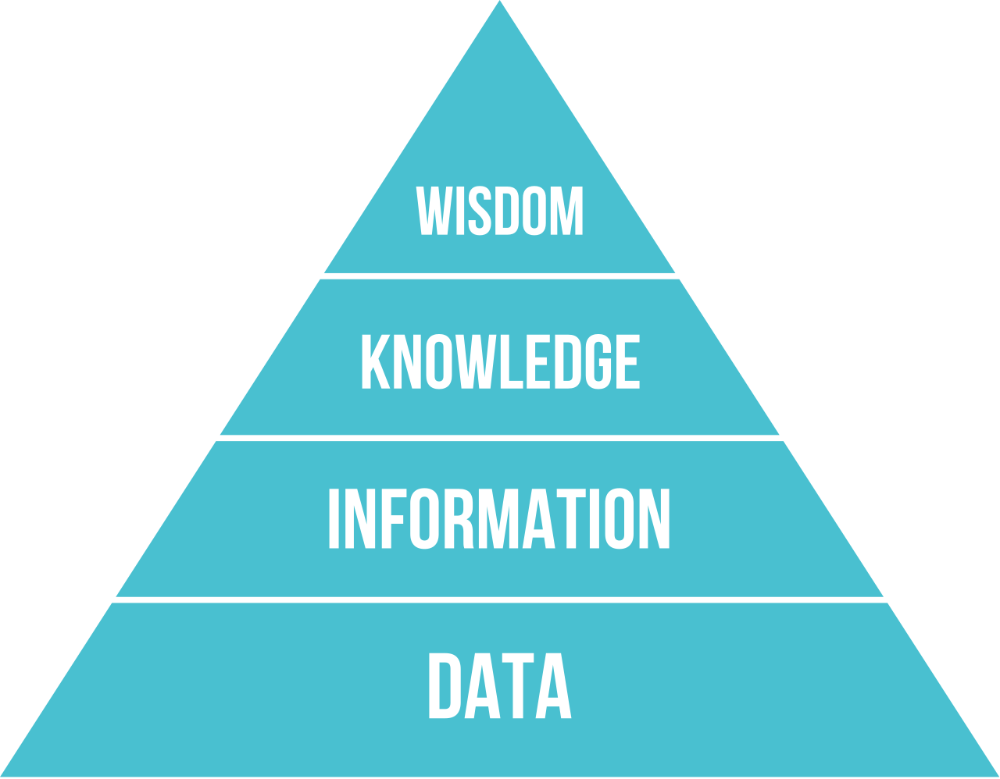 * Wisdom * <span class="highlight">Knowledge</span> * <span class="highlight">Information</span> * Data Data visualisation → <span class="highlight">Information visualisation</span> We should <span class="highlight">communicate/visualise our knowledge</span> --- class: center, middle # <span class="highlight">Data</span> visualisation 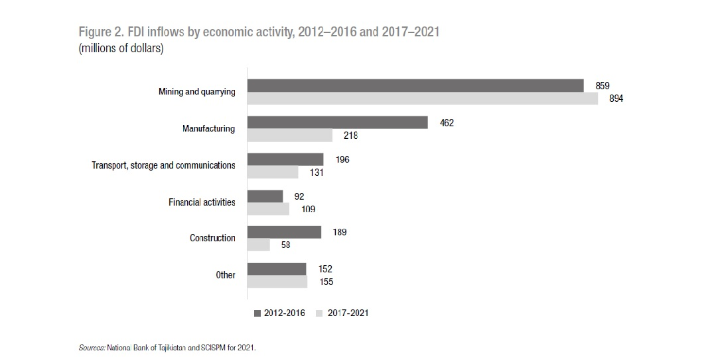 --- class: center, middle # <span class="highlight">Information</span> visualisation 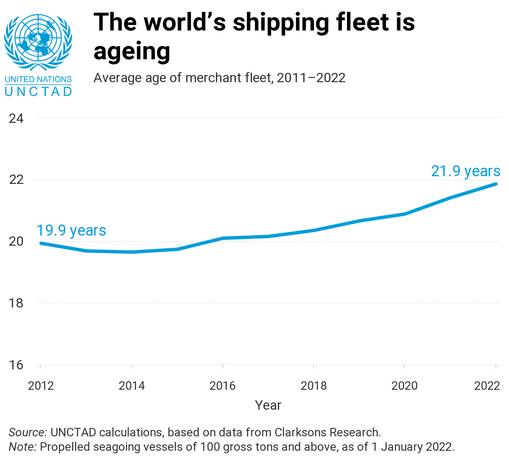 --- class: center, middle # Ok, there is <span class="highlight">data</span>! 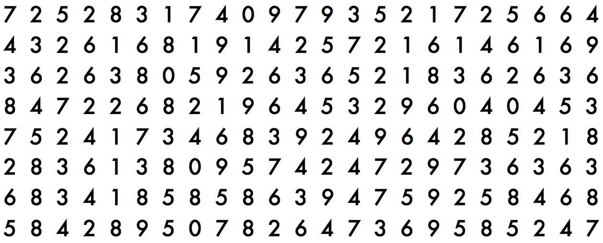 --- class: center, middle # How many <span class="highlight">threes</span>? Count! --- class: center, middle # <span class="highlight">20</span> <img src="img/kolmoset_2.png" alt="" style="width: 600px; display: inline;"/> --- class: left, middle # Characteristics of a good <span class="highlight">information visualisation</span> * Has and delivers a message * Simple and understandable * Unambiguous * Works on it's own * Beautiful * Correct <div style="float: right"><a href="https://www.instagram.com/p/Clccf0Lqts4/" target="_blank">1</a>, <a href="https://unctad.org/data-visualization/now-8-billion-and-counting-where-worlds-population-has-grown-most-and-why" target="_blank">2</a></div> <span class="highlight">What else?</span> --- class: center, middle # Visualisation as a process 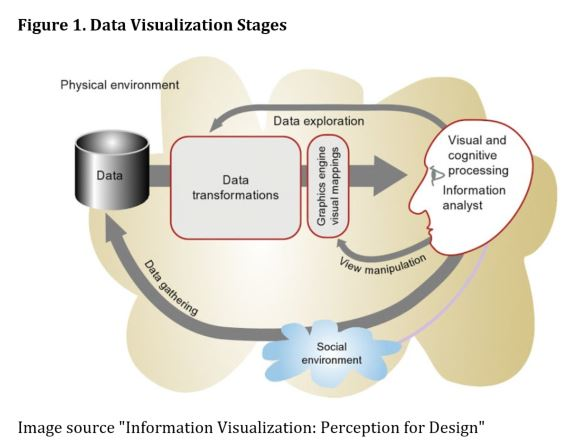 --- class: left, middle # <span class="highlight">Story</span> When Can You Retire And For How Long <p><span class="highlight">Motivation</span> Pension system reform</p> <p><span class="highlight">Implementation</span> Embedded calculator</p> <p><span class="highlight">Outcome</span> One of the most read stories of the year</p> <div style="float: right"><a href="https://docs.google.com/spreadsheets/d/1Gj3uqUzWOUeDGamxc8Ig_Owu-EfZzzs-MaLSLESf0C4/edit#gid=1128173612" target="_blank">» data</a></div><br /> <div style="float: right"><a href="http://yle.fi/uutiset/3-9273402" target="_blank">» story</a></div><br /> --- class: left, middle # One of most read stories of the year, <span class="highlight">Why?</span> * Calculator <span class="highlight">placed on top</span> of the article * Had a <span class="highlight">default result</span> * Easy to use, personal * Simple but <span class="highlight">“suprising”</span> message * <span class="highlight">Shareable</span> result: over 100,000+ FB actions * Funny → <span class="highlight">Memorable</span> --- class: left, middle # Challenges / Obstacles * From <span class="highlight">Excel</span> to story * Visualise information * <span class="highlight">Two datasets</span> → pick more relevant * Keep the main message simple * Use of <span class="highlight">understandable language</span> and terms * It is easy to get lost in your own excellence --- class: full, middle 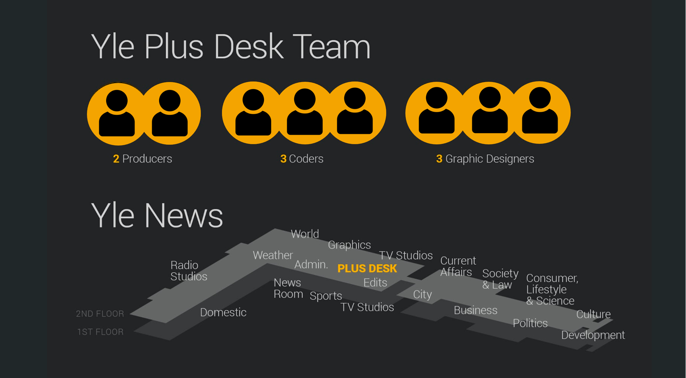 --- class: left, middle # Plus Desk at <span class="highlight">Yle News</span> <img src="img/hahmottelu.png" style="width: 230px; float: right; padding-left: 30px; margin-right: -70px; margin-top: 10px;"> * Online stories in <span class="highlight">co-operation</span> with other teams * Usually in a project included a programmer, a graphic designer and a journalist * And <span class="highlight">together</span> they try to come up with the best presentation for each story I would like to see <span class="highlight">similar method</span> here at UNCTAD --- class: left, middle # Visual design Charts we put out should be <span class="highlight">visually polished</span> * Use <a href="https://intranet.unctad.org/UNCTADBrandingResources/_layouts/15/WopiFrame2.aspx?sourcedoc={d1a048e0-8c20-4e06-a259-6f4c31af64c0}&action=view"><span class="highlight">UN colors</span></a>! * Use unified visual design that is <span class="highlight">recognisable</span> * Template for charts is available in Datawrapper * Font and sizes matter – <span class="highlight">each word is important</span> * Especially on <span class="highlight">social media</span> these things matter * [Twitter](https://twitter.com/UNCTAD/media), [Instagram](https://www.instagram.com/unctad/) --- class: center, middle # Not yet visually polished 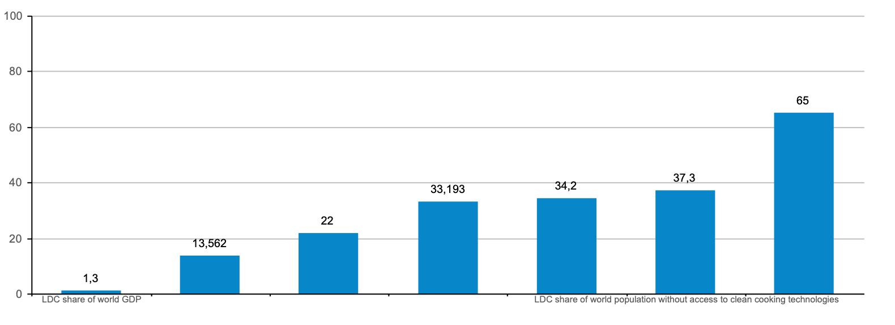 --- class: center, middle # Visually polished 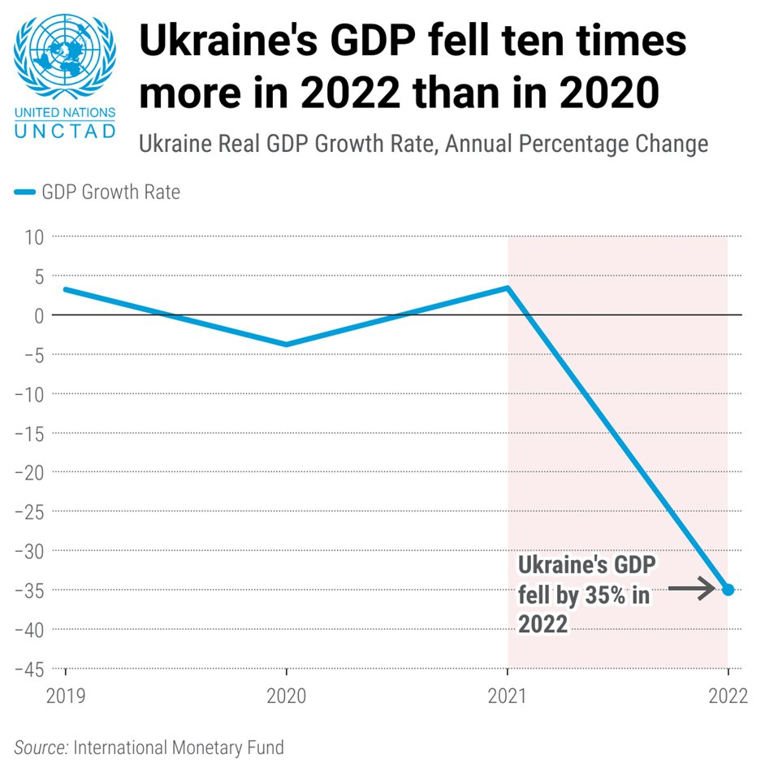 --- class: left, middle # <span class="highlight">Social media</span>: an example How to attract on social media? * Have <span class="highlight">a simple message</span>, that is easily understandable * <span class="highlight">Movement</span> might help to attract attention * But should be used with [caution](https://www.instagram.com/p/CkBWemeIEo5/) * [This](https://twitter.com/UNCTAD/status/1593274226861031426) was one of our most seen posts in 2022 --- class: left, middle # Why are we learning about these things? * To make UNCTAD <span class="highlight">more prominent</span> * With larger audiences we are <span class="highlight">more important</span> and <span class="highlight">relevant</span> --- class: left, middle # <span class="highlight">Exercise</span>: take pen and paper Make up as many ways to visualize numbers <span class="highlight">75</span> and <span class="highlight">37</span>. Sketch on paper. Kilograms? Centimeter? Age? Width? Lenght? <span class="highlight">Take 5 minutes</span> --- class: left, middle # Just few <span class="highlight">examples</span> 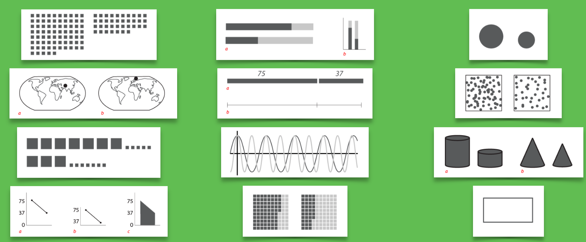 --- class: left, middle # One data, one message: <span class="highlight">multiple presentations</span> * [Column chart](https://ebuddj.github.io/2021-temperature2/): global, per year * [Sunbust](https://ebuddj.github.io/2021-temperature/): per country, per year * [Map](https://ebuddj.github.io/2020-temperature/): per country, per year * [Data Intensive](https://ebuddj.github.io/2019-temperature/): per country, per year and month --- class: left, middle # Let's <span class="highlight">discuss</span> 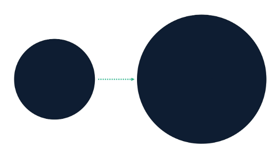 * [World Bank](https://www.linkedin.com/posts/the-world-bank_wbgep2023-activity-7028663868222545920-ZzUO) * [eCommerce](https://mailchi.mp/statista.com/paypal-q3-results-slow-but-steady-growth-1171314) * [UNCTAD](https://www.instagram.com/p/CoJ9_FxNSgg/) * [UNCTAD](https://www.instagram.com/p/CmjhGLYIulV/) * [Economist](https://www.economist.com/graphic-detail/coronavirus-excess-deaths-tracker) * [OWID](https://ourworldindata.org/grapher/excess-mortality-p-scores-projected-baseline?country=MEX~RUS~ZAF) Pie charts, number of colors, cutting axes --- class: left, middle # Maps as a visualisation * Good when the data shows <span class="highlight">a spatial trend</span>: [1](https://timogrossenbacher.ch/2016/12/beautiful-thematic-maps-with-ggplot2-only/), [2](https://louhos.github.io/figs/2015-06-06-kuntakartat/20150606-mmlplot2b-1.png), [3](https://yle.fi/uutiset/3-8944418"), [4](https://twitter.com/simongerman600/status/1625105022219431936) * Or when the [location is relevant](https://www.washingtonpost.com/graphics/national/eclipse/?utm_term=.bff5f0be2b11) * Beautiful maps (and informative): [1](https://www.windy.com/?46.225,6.152,5), [2](https://earth.nullschool.net/#current/wind/surface/level/orthographic=-344.07,50.22,450), [3](https://www.chronotrains.com), [4](https://metrocosm.com/global-air-traffic-map/) But <span class="highlight">often</span> it is also the case that <span class="highlight">another type</span> of visualisation <span class="highlight">works better</span> to deliver the message --- class: center, middle # <span class="highlight">4 things</span> I like to keep in mind 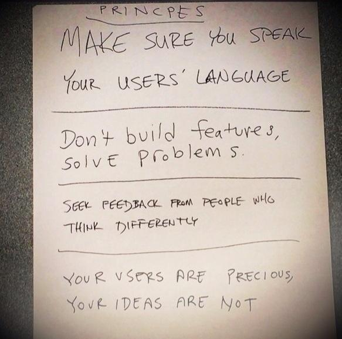 --- class: left, middle # <span class="highlight">Story</span> What is the status of your municipality <p><span class="highlight">Motivation</span> Upcoming elections</p> <p><span class="highlight">Implementation</span> Municipality Radar</p> <p><span class="highlight">Outcome</span> Noda Awards '17 nominee</p> <div style="float: right"><a href="https://docs.google.com/spreadsheets/d/15M_MyAudZXCMASTlbP4SSA3BTQFlw7RRxVwa47uDcEs/edit#gid=0" target="_blank">» data</a></div><br /> <div style="float: right"><a href="https://yle.fi/uutiset/3-9490180" target="_blank">» story</a></div><br /> --- class: left, middle # Noda Awards '17 nominee, <span class="highlight">Why?</span> * Quick <span class="highlight">Overview</span> → <span class="highlight">Details</span> on Demand * <span class="highlight">Personalized</span> and <span class="highlight">Familiar</span> feel * Municipality arms, Subtitle, Background map, Street view, Municipality text * Was adopted by municipalities and by public * <a href="http://yle.fi/uutiset/3-9252893" target="_blank">Data and process was opened</a> --- class: left, middle # Minisites: <span class="highlight">"All you need to know"</span> * [EDAR 2022](https://unctad.org/edar2022), [2021](https://unctad.org/publication/economic-development-africa-report-2021) * [RMT 2022](https://unctad.org/rmt2022), [2021](https://unctad.org/webflyer/review-maritime-transport-2021) * [HBS 2022](https://unctad.org/news/unctad-releases-key-data-report-global-economic-trade-and-development-trends) * [Minisite](https://hbs.unctad.org/) Emphasis on the message and <span class="highlight">visuality</span> We have <span class="highlight">tailored analytics</span> to track the usage --- class: center, middle # Datavis gone <span class="highlight">wrong</span> <a href="http://livingqlikview.com/the-9-worst-data-visualizations-ever-created/" target="_blank">The 9 Worst Data Visualizations Ever Created</a> --- class: center, middle # Thank you! <span class="highlight">Questions?</span> <img src="http://upload.wikimedia.org/wikipedia/commons/thumb/f/f1/Heart_coraz%C3%B3n.svg/1024px-Heart_coraz%C3%B3n.svg.png" alt="" style="width: 300px;"/><br /> Teemo Tebest, <a href="http://twitter.com/teelmo"><span class="highlight">@teelmo</span></a> --- class: left, middle # UNCTAD ♡ <span class="highlight">Datawrapper</span> * [Fossil fuels](https://unctad.org/data-visualization/fossil-fuels-trading-wrong-direction) * [A Double Burden](https://unctad.org/a-double-burden) * [Datawrapper](https://app.datawrapper.de/archive/team/unctad/128278?) * [Black Sea Grain Iniative](https://www.un.org/en/black-sea-grain-initiative/vessel-movements) * [Datawrapper](https://app.datawrapper.de/archive/team/unctad/118123?) * [Global Crisis](https://unctad.org/global-crisis) * [Datawrapper](https://app.datawrapper.de/archive/team/unctad/110307?) [Datawrapper Archive](https://app.datawrapper.de/archive/recently-edited) --- class: left, middle # Datawrapper, <span class="highlight">introduction</span> * Free for personal use * Every division has <span class="highlight">an account with license</span> * UNCTAD license * In Datawrapper <span class="highlight">each division has a folder</span> * Make sure to use this structure * <span class="highlight">If testing</span> make sure you are using your personal account or a private team [Datawrapper Academy](https://academy.datawrapper.de/) helps you! --- class: center, middle # Datawrapper, <span class="highlight">hands-on</span> Open [https://shorturl.at/aeoT5](https://shorturl.at/aeoT5)